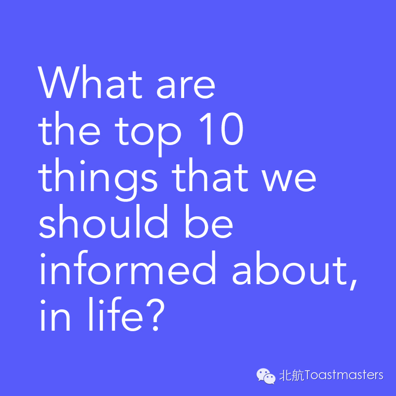

Via@Life: What are the top 10 things that we should be informed about in life? from Qoura
1.Realize that nobody cares, and if they do, you shouldn't care that they care.
Got a new car? Nobody cares. You'll get some gawkers for a couple of weeks—they don't care. They're curious. Three weeks in it'll be just another shiny blob among all the thousands of others crawling down the freeway and sitting in garages and driveways up and down your street. People will care about your car just as much as you care about all of those. Got a new gewgaw? New wardrobe? Went to a swanky restaurant? Exotic vacation? Nobody cares. Don't base your happiness on people caring, because they won't. And if they do, they either want your stuff or hate you for it.
2.Some rulebreakers will break rule number one.
Occasionally, people in your life will defy the odds and actually care about you. Still not your stuff, sorry. But if they value you, they'll value that you value it, and they'll listen. When you talk about all of those things that nobody else cares about, they will look into your eyes and consume your words, and in that moment you will know that every part of them is there with you.
3.Spend your life with rulebreakers. Marry them.
Befriend them. Work with them. Spend weekends with them. No matter how much power you become possessed of, you'll never be able to make someone care—so gather close the caring.
4.Money is cheap.
I mean, there's a lot of it—trillions upon trillions of dollars floating around the world, largely made up of cash whose value is made up and ascribed to it, anyway. Don't engineer your life around getting a slightly less tiny portion of this pile, and make your spirit of generosity reflect this principle. I knew a man who became driven by the desire to amass six figures in savings, so he worked and scrimped and sacrificed to get there. And he did... right before he died of cancer. I'm sure his wife's new husband appreciated his diligence.
5.Money is expensive.
I mean, it's difficult to get your hands on sometimes—and you never know when someone's going to pull the floorboards out from under you—so don't be stupid with it. Avoid debt on depreciating assets, and never incur debt in order to assuage your vanity (see rule number one). Debt has become normative, but don't blithely accept it as a rite of passage into adulthood—debt represents imbalance and, in some sense, often a resignation of control. Student loan debt isn't always avoidable, but it isn't a given—my wife and I completed a combined ten years of college with zero debt between us. If you can't avoid it, though, make sure that your degree is an investment rather than a liability—I mourn a bit for all of the people going tens of thousands of dollars in debt in pursuit of vague liberal arts degrees with no idea of what they want out of life. If you're just dropping tuition dollars for lack of a better idea at the moment, just withdraw and go wander around Europe for a few weeks—I guarantee you'll spend less and learn more in the process.
6.Learn the ancient art of rhetoric.
The elements of rhetoric, in all of their forms, are what make the world go around—because they are what prompt the decisions people make. If you develop an understanding of how they work, while everyone else is frightened by flames and booming voices, you will be able to see behind veils of communication and see what levers little men are pulling. Not only will you develop immunity from all manner of commercials, marketing, hucksters and salesmen, to the beautiful speeches of liars and thieves, you'll also find yourself able to craft your speech in ways that influence people. When you know how to speak in order to change someone's mind, to instill confidence in someone, to quiet the fears of a child, then you will know this power firsthand. However, bear in mind as you use it that your opponent in any debate is not the other person, but ignorance.
7.You are responsible to everyone, but you're responsible for yourself.
I believe we're responsible to everyone for something, even if it's something as basic as an affirmation of their humanity. However, it should most often go far beyond that and manifest itself in service to others, to being a voice for the voiceless. If you're reading this, there are those around you who toil under burdens larger than yours, who stand in need of touch and respect and chances. Conversely, though, you're responsible for yourself. Nobody else is going to find success for you, and nobody else is going to instill happiness into you from the outside. That's on you.
8.Learn to see reality in terms of systems.
When you understand the world around you as a massive web of interconnected, largely interdependent systems, things get much less mystifying—and the less we either ascribe to magic or allow to exist behind a fog, the less susceptible we'll be to all manner of being taken advantage of. However:
9.Account for the threat of black swan events.
Sometimes chaos consumes the most meticulous of plans, and if you live life with no margins in a financial, emotional, or any other sense, you will be subject to its whims. Take risks, but backstop them with something—I strongly suspect these people who say having a Plan B is a sign of weak commitment aren't living hand to mouth. Do what you need to in order to keep your footing.
10.You both need and don't need other people.
You need others in a sense that you need to be part of a community—there's a reason we reflexively pity hermits. Regardless of your theory of anthropogenesis, it's hard to deny that we are built for community, and that 'we' is always more than 'me.' However, you don't need another person in order for your life to have meaning—this idea that Disney has shoved through our eyeballs, that there's someone out there for all of us if we'll just believe hard enough and never stop searching, is hokum... because of arithmetic, if nothing else. Establish your own life—then, if there's a particular person that you can't help but integrate, believe me, you'll know.